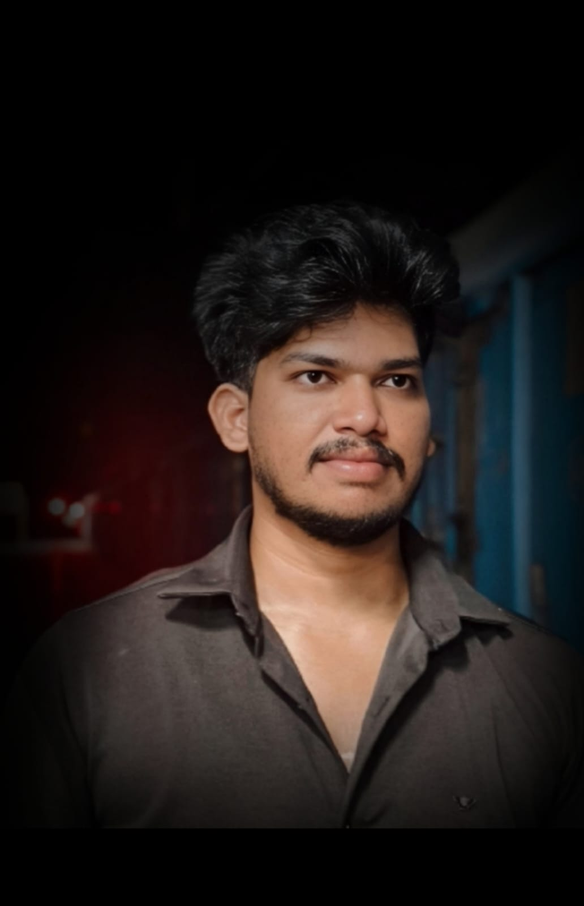

Hi, I’m Manikanta Sundara — I am a passionate web developer with a strong focus on frontend technologies. With expertise in HTML, CSS, JavaScript, and modern frameworks, I craft responsive and dynamic interfaces. I enjoy turning complex problems into elegant user experiences. Driven by creativity and performance, I aim to build seamless web applications.

Here are some of my skills on which I have been working!